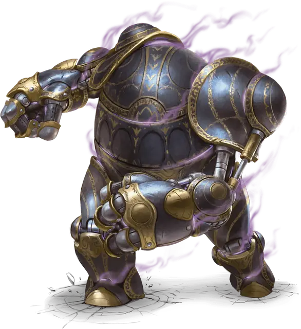

Могучий слуга Леук-о
Mighty Servant of Leuk-o
Чудесный предмет, артефакт (требуется настройка)

Названный в честь полководца, который позорно использовал его, могучий слуга Леук-о [Mighty Servant of Leuk-o] — это фантастически мощная машина высотой 10 футов, которая при пилотировании превращается в живого конструкта. Сделанный из блестящего чёрного сплава неизвестного происхождения, слуга часто описывается как сочетание непропорционального дварфа и жука-переростка. Слуга содержит внутри место, достаточное для 1 тонны груза, и отсек экипажа вместимостью до двух Средних существ, которые могут управлять им, что может привести к непрекращающейся череде разрушений.
Истории о происхождении слуги содержат больше предположений, чем фактов, часто ссылаясь на потусторонних существ, таинственные Барьерные Пики Орта и предположительно связанное с ним устройство, известное как «Машина Лума Безумного». Наиподробнейшую информацию о происхождении и работе устройства можно найти в «Разуме Металла» — томе секретов изобретателя, который связывает устройство с традициями потерянного народа Олманов. Том был написан Маэстро Лум, прапраправнучкой Лума Безумного, когда она реконструировала давно разобранного могучего слугу Леук-о.
Опасная настройка. На слугу могут быть настроены два существа одновременно. Если на него пытается настроиться третье существо, ничего не происходит.
Доступ к управлению слугой осуществляется через люк в его верхней части спины, который легко открывается, пока нет существ, настроенных на артефакт.
Настройка на артефакт требует двух часов, которые могут быть частью продолжительного отдыха, в течение которых вы должны находиться внутри слуги, взаимодействуя с его элементами управления. В то время как члены экипажа настраиваются на слугу, любое существо или структура снаружи в пределах 50 футов от слуги имеет 25-процентный шанс случайно стать мишенью для атаки «Разрушительными кулаками» единожды вовремя настройки. Это будет случаться каждый раз, когда существо настраивается на артефакт.
Контроль над слугой. Настроенные на артефакт существа могут открыть люк так же легко, как и любую другую дверь. Другие существа могут открыть люк действием, преуспев в проверке Ловкости Сл 25 с применением воровских инструментов. Заклинание открывание [knock], наложенное на люк, также открывает его до начала следующего хода заклинателя.
Существо может войти или выйти через люк, потратив 10 футов движения. Существа внутри слуги имеют полное укрытие от внешних воздействий. Органы управления слуги позволяют экипажу видеть то, что находится снаружи, без помех.
Пока вы находитесь внутри слуги, вы можете управлять им с помощью органов управления. Любое настроенное существо во время своего хода может управлять слугой следующими способами:
- Открыть или закрыть люк (никаких действий не требуется, один раз за ход)
- Переместить слугу в пределах его скорости ходьбы (никаких действий не требуется)
- Действием вы можете приказать слуге совершить одно из действий из его блока статистики или какое-либо другое действие.
- Когда существо провоцирует атаку со стороны слуги, вы можете реакцией приказать слуге совершить атаку «Разрушительным кулаком» поэтому существу.
Пока внутри слуги нет настроенных существ, он является инертным объектом.
Призрак в машине. После смерти душа могущественного военачальника Леук-о была втянута в артефакт и стала его оживляющей силой. Известно, что слуга нападает или движется сам по себе, особенно если это приведет к разрушению чего-либо. Один раз каждые 24 часа слуга, на усмотрение Мастера, совершает одно действие, если в нём нет экипажа.
Если слуга теряет половину своих хитов или больше, каждое существо, настроенное на него, должно преуспеть в спасброске Мудрости Сл 20,иначе станет очарованным на 24 часа. Будучи очарованным таким образом, существо делает всё возможное ради непрекращающейся череды разрушений, стремясь разрушить сооружения и атаковать любых ненастроенных существ в пределах видимости слуги, начиная с тех, кто угрожает артефакту — предпочитая использовать возможности самого слуги, пока это возможно.
Самоуничтожение. Введя определённую комбинацию из поворотов рычагов и нажатий кнопок, два члена экипажа слуги могут заставить его взорваться. Код самоуничтожения не раскрывается членам экипажа, когда они настраиваются на артефакт. Если код обнаруживается (Мастер определяет, как), требуется, чтобы два настроенных члена экипажа находились внутри слуги и тратили свои действия на выполнение необходимых для самоуничтожения команд в течение 3-х последовательных раундов. Однако, если члены экипажа начинают процесс ввода кода, слуга использует своё действие «Призрак в машине» и настраивает членов экипажа друг против друга.
Если члены экипажа успешно вводят код, то в конце третьего раунда слуга взрывается. Каждое существо в сфере радиусом 100 футов, с центром на слуге, должно совершить спасбросок Ловкости Сл 25. При провале существо получает 87 (25к6) урона силовым полем, 87 (25к6) урона электричеством и 87 (25к6) урона звуком. При успешном спасброске существо получает вдвое меньше урона. Объекты и сооружения в области взрыва получают утроенный урон. Существа внутри слуги мгновенно умирают и не оставляют после себя никаких следов.
Однако это не уничтожает слугу навсегда. Вместо этого 2к6 дней спустя его части — левая рука, левая нога, правая рука, правая нога, нижняя часть торса и верхняя часть торса — упадут с неба в случайных местах в пределах 1000 миль от взрыва. Если их собрать на расстоянии 5 футов друг от друга, то части соединятся в слугу.
Уничтожение слуги. Слугу можно уничтожить двумя способами. После самоуничтожения его разрозненные части могут быть расплавлены в одном из храмов-кузниц его древних создателей из Олман. В качестве альтернативы, если слуга ударит «Машину Лума Безумного», то оба артефакта аннигилируют во взрыве, трижды превышающем эффект «Самоуничтожения» по радиусу и урону.